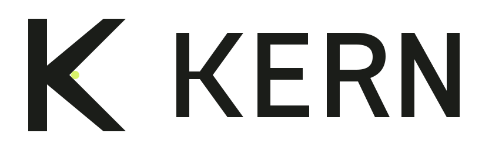
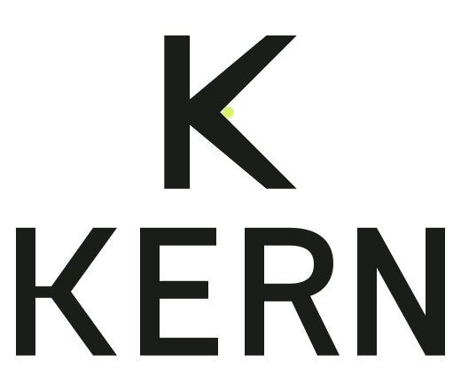
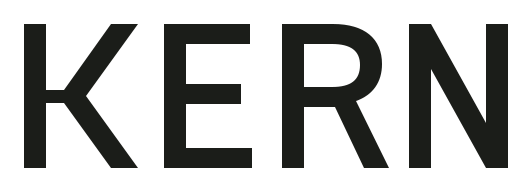
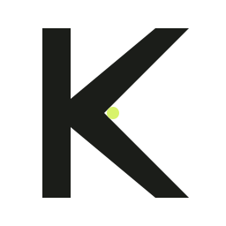
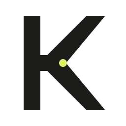
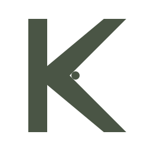

Identity · final
01 / Brief
KERN is a strength and mobility studio for busy adults who want a clear starting point, not a louder gym and not a clinical treatment.
Calm
Bone walls, one small signal of action, and time to pay attention.
Precise
Assessment before training. Numbers treated as measurements, not decoration.
Human
Small groups, plain language, no performance theatre.
The logo had to feel like a measurement taken calmly, not a badge earned.
02 / The mark
Construction diagram, not to scale. The point is a detail of the mark, not a recognition device: it is visible on ink and moss, and stays quiet on bone.
03 / Lockups


Square spaces, labels, social avatars.
When the point is not needed.04 / Sizes and colour
Below 24 px, the point is dropped: use the one-colour or small-size file. Never rebuild the wordmark by typing KERN.


32 · 16 px
One colour05 / In use

NørrebroMockups are flat colour studies, not photographs. No real address, coach name, or contact detail is shown, because KERN is a concept project.
06 / Handover
masters/Five outlined SVGs: symbol, small symbol, wordmark, horizontal, stacked.exports/Ink, bone, and one-colour versions as SVG and PNG, plus favicons, app icons, and a web manifest.brand-guidelines.mdClear space, minimum sizes, colour pairs, and usage rules.kern-preview.htmlTest sheet for small sizes, reversed artwork, and misuse.Before launch. Run a trademark search for KERN in the relevant class. Replace the concept-project label wherever the mark is shown in public.
Check in place. Look at the 16 px favicon and the 120 px header on a real screen, light and dark, before signing off.
Do not rebuild. The wordmark is outlined geometry. Type it in Fraunces or Manrope and it is no longer the logo.
Concept project · not a real business